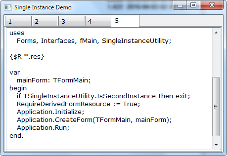

Contents
Introduction
This is a second article from the short two-article series on single-instance application behavior. The previous article was on the solution for .NET; it can be found here: All Three Features of Single-Instance Applications at One Shot, .NET.
The present article is the result of coming back to my very old product written with Borland Delphi, which I wanted to port to Free Pascal with Lazarus LCL UI library and promote it from Windows-only to cross-platform code. As I mentioned in my recent article referenced above, some my solutions for single-instance application behavior was not satisfactory, including the solution for Pascal. By this time, I already had .NET solution described in the same article, so I developed new Free Pascal solution following the model set by my .NET solution. It came out extremely compact, so I want to share it.
For motivation and explanation of the requirements to the single application instance facility, please see the article referenced above. I wrote the present article in assumption that the reader read this article and understand the ideas behind the .NET implementation.
Back to Pascal!
Why Pascal? And why Free Pascal? Because this is the best cross-platform technology of programming in native code I ever knew. Apparently, old good Delphi suffered dramatic decline. It was related to many events, first of all, creation of .NET and C# under the leadership of former Delphi chief architect Anders Hejlsberg, who moved to Microsoft, problems with Linux version Kylix, its CLX cross-platform library and lack of unification with VCL, severe bugs in some newer versions, acquisition of Delphi by Embarcadero… Most Delphi developers migrated to .NET with ease, because Delphi legacy and direct influence on .NET made .NET features quite predictable for people experienced in Delphi.
At the same time, the history of Object Pascal and Delphi Pascal development created whole programming culture, highly cultural, “academic” language, safe and efficient, with expressive capacity superior to many modern languages, including, in a number of aspects, .NET languages. To name just a few: sets, enumeration type which really enumerate and can be used for indexing arrays, and, importantly, fully-fledged meta-class system, which, sadly, was not inherited by .NET, replaced by much weaker, untyped System.Type type.
And Free Pascal community picked up the fallen flag. I did not pay much attention for it for a number of years; and the product gave me impression of immaturity, but couple of latest versions really impressed me. First of all, they created a truly cross-platform tool, including cunning UI architecture called LCL.
The list of supported platforms is quite impressive.
The Idea
Exactly as in the previous article, the main idea is using some message-oriented IPC for passing command-line data; and the same mechanism should be re-used for detection of the presence of absence of the first instance of the application.
Free Pascal bundles an extremely light-weight and simplified IPC library; and its simplicity if very good for our purpose. This facility is implemented as a pair of classes: SimpleIpc.TSimpleIPCServer and SimpleIpc.TSimpleIPCClient. There is no a need to catch an exception on failure to connect; detection of the server part is already implemented as the Boolean function SimpleIpc.TSimpleIPCClient.ServerRunning. Please see http://www.freepascal.org/docs-html/fcl/simpleipc/tsimpleipc.html.
The primary message type these classes operate with is string; it can be sent and received without any additional preparation. However, the only data-intensive message we need is not string, but array of strings, which we need to serialize into a string and deserialize back into the array.
The Usage
Here is how the usage looks in the entry point block: it is started with the single additional line calling this class function:
if TSingleInstanceUtility.IsSecondInstance then exit;
However, this is not all. When the TSingleInstanceUtility.IsSecondInstance returns false, first instance continues to execute. It should prepare the server used to handle requests from the second instance later. This time, the application needs to create an instance of the TSingleInstanceUtility class. This instance needs a handler of the only instance public event, OnCommandLineFromSecondInstance. The event handler of this event accept a single string parameter used to pass command line from the first instance. This is not a simple string. This is a serialized array of already parsed command line parameters, serialized in a special way. So the server part needs to deserialize this string back to the array of strings. This is done by calling a class helper method TSingleInstanceUtility.DeserializeCommandLine. Then the server part (first instance) is supposed to handle all those command-line parameters at once, if applicable, and, optionally, activate itself, if applicable, which can be showing its main application window on top of other application windows, in Z order. At the end of application lifetime, the instance of TSingleInstanceUtility should be destroyed. This is how it may look, in a skeleton form:
procedure TFormMain.AcceptCommandLineFromSecondInstance(commandLine: string);
var
files: array of string;
begin
Application.Minimize;
Application.Restore;
Application.BringToFront;
files := TSingleInstanceUtility.DeserializeCommandLine(commandLine);
end;
constructor TFormMain.Create(TheOwner: TComponent);
begin
inherited Create(TheOwner);
SingleInstanceUtility := TSingleInstanceUtility.Create;
SingleInstanceUtility.OnCommandLineFromSecondInstance := @AcceptCommandLineFromSecondInstance;
end;
destructor TFormMain.Destroy;
begin
SingleInstanceUtility.Free;
inherited Destroy;
end;
The way the form is activated deserves special discussion. For Windows, ideal way of activating of the form is pretty complicated. In the original Delphi application I recently ported to Free Pascal in a cross-platform way, it was a pretty tricky solution based on native Windows API:
procedure BringToFront(AppHandle: THandle);
var
topWindow: HWnd;
begin
if AppHandle = 0 then exit;
topWindow := GetLastActivePopup(AppHandle);
if (topWindow<>0) and (TopWindow <> AppHandle) and
IsWindowVisible(topWindow) and IsWindowEnabled(topWindow) then
SetForegroundWindow(topWindow);
end;
Here, GetLastActivePopup is needed to cover special case when the application is showing a dialog when the second instance starts. Too bad, in a cross-platform implementation of LCL TForm or TApplication, there is no a method which does something like that for Windows part of implementation. Of course, direct use of Windows API is still possible, under the precompiler directive isolating Windows part of implementation, but it still compromise the portability of the application and especially its maintenance. In pure cross-platform LCL calls, the Application.BringToFront call merely flashes the task bar icon, bringing attention to the application, exactly as its .NET analog, which is obviously not enough and not convenient for the users. Showing the form on top is possible by minimizing the application and then showing it normally, but it produces some barely noticeable flicker.
Other methods supposed to be suitable, such as TForm.ShowOnTop or TForm.EnsureVisible(AMoveToTop: Boolean = True) have no effect. And it all doesn’t work on the application showing a dialog.
This is not actually a Lazarus problem. Working with Windows-only version of the code (which can be done with {$IFDEF MSWINDOWS} compilation directive), the attempts to bring a window on the top shows that the behavior of Windows API has changed since XP. The problem is that setting a window as a foreground Window really works with SetForegroundWindow, but, on Windows 7, it requires a user’s click on the system tray, where the application tray icon starts blinking after the call; other functions such as BringWindowToTop are seemingly ignored. Of course, this is quite inconvenient for the purpose, so the “trick” with minimized and then restored window is still the best.
Implementation
The implementation is similar to the .NET implementation described in the first article of these serieshttps://www.codeproject.com/Articles/1089841/SingleInstance-NET, but is notably more compact. Here, I’ll show just the core method of the utility, which tries to connect to the server and sends the command line data in case of successful connection:
class function TSingleInstanceUtility.IsSecondInstance: boolean;
var
client: TSimpleIPCClient;
commandLineMerged: string;
begin
Result := false;
client := TSimpleIPCClient.Create(nil);
client.ServerID := GetServerID;
try
try
if not client.ServerRunning then begin
Result := false; exit;
end ;
client.Connect;
Result := true;
if CommandLine.FileCount > 0 then begin
commandLineMerged := SerializeCommandLine;
client.SendStringMessage(commandLineMerged);
end else
client.SendStringMessage(EmptyString);
except
Result := false;
end ;
finally
client.Free;
end ;
end ;
Naturally, as in .NET remoting, IPC facility requires setting of the string property ServerID, which is supposed to be system-unique. In my previous article, I explained my decision to use the full path name of the application’s executable file. With SimpleIPC, things are, well, simpler. As this string is not used as a part of URI with a path, a path name cannot interfere with URI syntax, so it is used in my solution as is: ServerID is assigned to the executable file path as is; and this is the value returned by GetServerID. On different platform, this path will look differently, but will still be unique on each system.
My Bonus
The operations related to my very old command line utility found in the file “CmdLinePlus.pas”. It’s usage is clear from the source code. For readable documentation on this unit, I would recommend to rename this file to .HTML and read with a Web browser (it was the documenting style I invented, but later I found out that other developers also used exact same technique).
It is not as convenient for a developer and comprehensive as my more recent .NET work Enumeration-based Command Line Utility, but it is fully functional. Good or bad, but the single-instance application facility described in the present article is based on the common file format defined by this command-line utility. Every command line parameter, as string item of the command line, as it is understood in Delphi, Free Pascal and .NET, is parsed and classified in two major kinds of parameters: a key with optional value and status, and a file name. Strictly speaking, file name is not required to be a file name; this is just the most common interpretation; this is a parameter which comes without a key. A key is the string started with ‘-’ or ‘/’, the key itself, followed by optional value, separated by ‘:’, as in a conventional .NET format.
Now, the limitation is: single-instance facilities only uses a set of file name, which is presented as an array of string. Only this set of strings is sent to the first instance of the application.
Of course, anyone is free to change that and use original command line.
It’s interesting to mention that TSingleInstanceUtility serializes this array of string, to send it as one single message to send it to the first instance; and the first instance needs to deserialize it, as it’s shown in the usage code sample, with the use of the helper function. The serialization is reduced to joining all strings of an array into a single string, separated by a character which can never be entered in a command line; the character #1 is chosen.
I provided the demo/test application “SingleInstanceUtilityDemo” which shows a tab control when a second instance starts; if some items of the command line are really existing files, they are shown as texts in each separate tab page.
For Windows, single-click batch file “build.bat” is provided to build all the code. All output of the build is sent to the sub-directories of the same directory as the batch file: “bin.Debug”, “bin.Release” (obviously, I created two customary build modes) and intermediate directory “lib” where all intermediate (object/unit) files are merged. For quick and total clean-up, the batch file “clean.bat” is provided.
The build is based on Lazarus application “lazbuild.exe”. To build code, it’s enough to install Lazarus for required platform. The path to “lazbuild.exe” in “build.exe” may need to be modified, depending on the installation directory. To load the project and build in IDE, click on “SingleInstanceUtilityDemo.lpi”.
For cross compilation, you can use the specific Lazarus technique: rebuild of Lazarus, which can be done in the IDE itself: menu Tools => Configure “Build Lazarus” or Build Lazarus…
The rebuild Lazarus can be sent in a separate directory and later used for cross build of the project.
I did not yet test the solution on anything except Windows 7, but plan to text it on Linux and Android. I will be much grateful if anyone takes the labor of testing of this facility and report any problems.
Credits
Free Pascal and Lazarus Team:
http://wiki.freepascal.org
http://www.freepascal.org/aboutus.var
http://www.lazarus-ide.org
http://www.lazarus-ide.org/index.php?page=about
Simple IPC: Copyright © 2005 by Michael Van Canneyt.